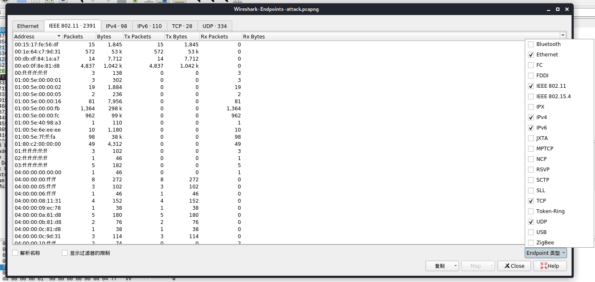
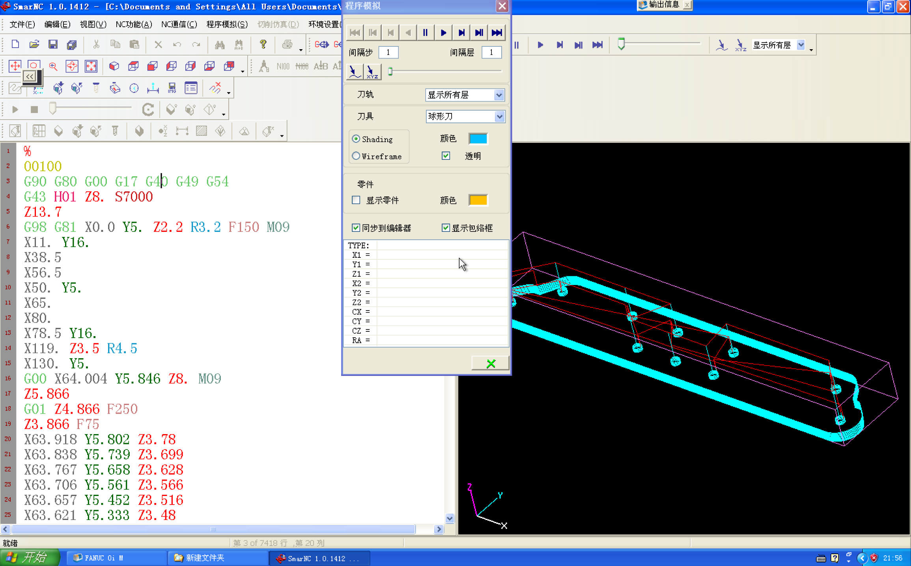

145 寻找入侵者
题目：黑客使用无线钓鱼攻击一个SSID为“CyberPeace”的热点，但是我们的蜜罐系统捕获了他的数据包，并且已经得知他的握手包密码就是他的网卡地址。可是根据我们最新获得的情况，他又发送重连请求的Malformat Frame试图崩溃我们的无线路由器。请从attack包中找到密码，并解开他的数据包,找到那条畸形数据。
（题目描述还是我自己搜到的……）
下载得到attack.pcapng和hanshake.cap。按照题目提示，attack.pcapng中包含的一个mac地址是密码，然后用hanshake.cap验证该密码的正确性。
先提取mac地址，wireshark打开attack.pcapng。菜单栏-统计-Endpoints，右下角Endpoint类型勾选IEEE 802.11。

点击复制-作为csv，得到以逗号分隔的数据，其中第一列就是mac地址。配合Excel将其提取后保存成文本。
将key作为字典，用aircrack-ng爆破密码：
root@kali:~/Desktop# aircrack-ng hanshake.cap -w /root/Desktop/key.txt

得到作为密码的mac地址是 88:25:93:c1:c8:eb 。
然后用该密码解密hanshake.cap包，使用airdecap-ng：
root@kali:~/Desktop# airdecap-ng -e Honey -p 88:25:93:c1:c8:eb hanshake.cap
Total number of stations seen 7
Total number of packets read 42767
Total number of WEP data packets 0
Total number of WPA data packets 6279
Number of plaintext data packets 0
Number of decrypted WEP packets 0
Number of corrupted WEP packets 0
Number of decrypted WPA packets 0
Number of bad TKIP (WPA) packets 0
Number of bad CCMP (WPA) packets 0
root@kali:~/Desktop# airdecap-ng -e gogogo -p 88:25:93:c1:c8:eb hanshake.cap
Total number of stations seen 7
Total number of packets read 42767
Total number of WEP data packets 0
Total number of WPA data packets 6279
Number of plaintext data packets 0
Number of decrypted WEP packets 0
Number of corrupted WEP packets 0
Number of decrypted WPA packets 0
Number of bad TKIP (WPA) packets 0
Number of bad CCMP (WPA) packets 0
但是不管用aircrack得到的ESSID：gogogo还是Writeup里给的ESSID：Honey都解密不成功，包的总数和Writeup也对不上，怀疑是不是附件有问题。
根据Writeup，这一步解密后可以导出http对象得到一个key.rar的下载地址，flag在其解压出的key.pcap中。但是这个地址好像也失效了，总之这题就很谜。
记录一下Writeup：
原题的flag：CISCN{Z9DY20jZIyjzY5vs0UQZVUg86eMYlNMzH}
XCTF的flag：CISCN{4qgVp9ufsXMpODy2YZada27J1ZNLVjKmB}
146 文件分析
题目：小丙在工业生产现场的数控机床上发现了一个插着的U盘，从中我们发现了一个word文件，不过这个文件好像有点异常，作为安全运营人员你能发现这个文件中是否蕴藏着什么秘密呢？flag<隐藏在NC中的关键信息>
下载得到docx格式文件，打开显示内容有错误。

强行恢复文件会得到机床生产计划控制卡，但没有更多可疑信息。

十六进制编辑器打开看一下文件头，发现开头并不是zip压缩包的50 4B 03 04，有一些可识读的字符串。

用strings命令导出所有可识读字符串：
root@kali:~/Desktop# strings a247926c049a4054a84785e4ec292fbe.docx > 1.txt
在接近开头部分可以找到一段完整的XML代码：
<?xpacket begin="
" id="W5M0MpCehiHzreSzNTczkc9d"?>
<x:xmpmeta xmlns:x="adobe:ns:meta/" x:xmptk="Adobe XMP Core 5.6-c138 79.159824, 2016/09/14-01:09:01 ">
<rdf:RDF xmlns:rdf="http://www.w3.org/1999/02/22-rdf-syntax-ns#">
<rdf:Description rdf:about=""
xmlns:xmp="http://ns.adobe.com/xap/1.0/"
xmlns:dc="http://purl.org/dc/elements/1.1/"
xmlns:photoshop="http://ns.adobe.com/photoshop/1.0/"
xmlns:xmpMM="http://ns.adobe.com/xap/1.0/mm/"
xmlns:stEvt="http://ns.adobe.com/xap/1.0/sType/ResourceEvent#"
xmlns:stRef="http://ns.adobe.com/xap/1.0/sType/ResourceRef#"
xmlns:tiff="http://ns.adobe.com/tiff/1.0/"
xmlns:exif="http://ns.adobe.com/exif/1.0/">
<xmp:CreateDate>2018-01-15T21:56:07+08:00</xmp:CreateDate>
<xmp:ModifyDate>2018-01-15T22:53:07+08:00</xmp:ModifyDate>
<xmp:MetadataDate>2018-01-15T22:53:07+08:00</xmp:MetadataDate>
<xmp:CreatorTool>Adobe Photoshop CC 2017 (Macintosh)</xmp:CreatorTool>
<dc:format>image/jpx</dc:format>
<photoshop:ColorMode>3</photoshop:ColorMode>
<photoshop:ICCProfile>Display</photoshop:ICCProfile>
<photoshop:TextLayers>
<rdf:Bag>
<rdf:li rdf:parseType="Resource">
<photoshop:LayerName>the flag is (3ijnhygvfr)H</photoshop:LayerName>
<photoshop:LayerText>the flag is (3ijnhygvfr)H</photoshop:LayerText>
</rdf:li>
</rdf:Bag>
</photoshop:TextLayers>
<xmpMM:InstanceID>xmp.iid:f8c2a526-531c-43c8-8276-86f29175de6a</xmpMM:InstanceID>
<xmpMM:DocumentID>adobe:docid:photoshop:38eb8b16-3a92-117b-9fa7-e556d70bd195</xmpMM:DocumentID>
<xmpMM:OriginalDocumentID>xmp.did:28abf164-6ae3-40a0-a3c1-8ac606cc6329</xmpMM:OriginalDocumentID>
<xmpMM:History>
<rdf:Seq>
<rdf:li rdf:parseType="Resource">
<stEvt:action>saved</stEvt:action>
<stEvt:instanceID>xmp.iid:28abf164-6ae3-40a0-a3c1-8ac606cc6329</stEvt:instanceID>
<stEvt:when>2018-01-15T22:53:07+08:00</stEvt:when>
<stEvt:softwareAgent>Adobe Photoshop CC 2017 (Macintosh)</stEvt:softwareAgent>
<stEvt:changed>/</stEvt:changed>
</rdf:li>
<rdf:li rdf:parseType="Resource">
<stEvt:action>converted</stEvt:action>
<stEvt:parameters>from image/png to image/jpx</stEvt:parameters>
</rdf:li>
<rdf:li rdf:parseType="Resource">
<stEvt:action>derived</stEvt:action>
<stEvt:parameters>converted from image/png to image/jpx</stEvt:parameters>
</rdf:li>
<rdf:li rdf:parseType="Resource">
<stEvt:action>saved</stEvt:action>
<stEvt:instanceID>xmp.iid:f8c2a526-531c-43c8-8276-86f29175de6a</stEvt:instanceID>
<stEvt:when>2018-01-15T22:53:07+08:00</stEvt:when>
<stEvt:softwareAgent>Adobe Photoshop CC 2017 (Macintosh)</stEvt:softwareAgent>
<stEvt:changed>/</stEvt:changed>
</rdf:li>
</rdf:Seq>
</xmpMM:History>
<xmpMM:DerivedFrom rdf:parseType="Resource">
<stRef:instanceID>xmp.iid:28abf164-6ae3-40a0-a3c1-8ac606cc6329</stRef:instanceID>
<stRef:documentID>xmp.did:28abf164-6ae3-40a0-a3c1-8ac606cc6329</stRef:documentID>
<stRef:originalDocumentID>xmp.did:28abf164-6ae3-40a0-a3c1-8ac606cc6329</stRef:originalDocumentID>
</xmpMM:DerivedFrom>
<tiff:Orientation>1</tiff:Orientation>
<tiff:XResolution>1440000/10000</tiff:XResolution>
<tiff:YResolution>1440000/10000</tiff:YResolution>
<tiff:ResolutionUnit>2</tiff:ResolutionUnit>
<exif:ColorSpace>65535</exif:ColorSpace>
<exif:PixelXDimension>2880</exif:PixelXDimension>
<exif:PixelYDimension>1800</exif:PixelYDimension>
</rdf:Description>
</rdf:RDF>
</x:xmpmeta>
特别是标红的两段，一段给出了涉及flag的线索，一段暗示文件中存在图片。
观察第一段涉及flag的字符串：the flag is (3ijnhygvfr)H。直接提交显示错误，说明还需要经过转码。注意到ijnhygvfr在键盘上是相邻的，组成了w形，即(3w)H。而3w十六进制ASCII转码为3377。尝试提交flag<3377>，正确。
另一方面，关于第二段字符串，可以判定是用Photoshop将一张png格式图片转为了jpx格式。如果也用Photoshop进行相同操作并在十六进制下比对文件头，可以找到图片数据所在位置并补完文件头将其还原。得到图片如下：

可以看到刀路图轨迹也是w形，但有没有用就不知道了。
flag：flag<3377>
147 Whisper
下载得到flag.rar（加密压缩包）、start here.exe和hint 1.png。hint 1.png是白色背景加浅色字，Stegsolve查看：

Ron Adi Leonard是RSA三位发明人的名字，另外十六进制编辑器查看该图片发现文件尾后还有大量字符。

怀疑是base64加密，但解密提示错误。继续寻找其他线索。
对start here.exe进行逆向，结合RSA这一提示，sub_401000函数中找到n=2344088051，e=65537，以及main函数中有44段密文。

写python脚本解密：
import gmpy2 as gp
from Crypto.Util.number import long_to_bytes
data = [622838535, 508814435, 561075127, 248530155, 653037999, 1334603920, 1172634043, 653037999, 1829025346, 653037999, 267737582, 508814435, 1439175056, 1439175056, 1476420672, 561075127, 653037999, 905042354, 1295878487, 905042354, 653037999, 1903325710, 508814435, 1791351287, 1476420672, 1192292765, 653037999, 1476420672, 561075127, 2095854527, -2030465449, 1439175056, 1476420672, 1439175056, 653037999, 508814435, 561075127, 653037999, 839707766, 1829025346, 1751579215, 1476420672, 695921644, 872207435]
p = gp.mpz(46099)
q = gp.mpz(50849)
e = gp.mpz(65537)
n = p*q
phi = (p-1) * (q-1)
d = gp.invert(e, phi)
for i in data:
m = pow(i, d, n)
print(str(long_to_bytes(m))[2], end = '')
输出结果：
Hint 2: a hidden RAR file, encHded in base64
也就是说，从图片获得的大量字符串中，隐藏着一段由某个RAR文件加密而来的base64密文。
已知RAR文件的文件头为Rar!，base64加密后开头为UmFyI，查找到这一字符串，然后提取该位置到等号=结尾的字符串，保存为文本文件后base64解密为RAR文件：
root@kali:~/Desktop# cat data.txt | base64 -d > 1.rar
可以看到该RAR压缩包内有1213个txt文件。

随便打开一个：

可以从文件头判断，实际是bzip格式压缩文件。将其解压后得到文本：
the neXt file iS 51e13c7fc51acbf15da7.txt
猜测思路如下：任选某个txt文件开始，bzip解压得到下一个文本文件的线索，如此循环直到找到最后一个文件为止。
但这里有一条捷径，该RAR压缩包打开时默认按文件大小排列，排第一的888dbf88f8db0d22628a.txt相比其他文件，大小相差较多。事实上这就是最后一个文件，将其作为bzip解压得到：
The password is 'Love & Truth'.
当然也可以写脚本把所有文件都bzip解压然后全部打印出来再找。
用该密码解压最开始的flag.rar即得到flag。
flag：ZCTF{Nightingale}
提交说flag不对，试了半天格式，累了，我不做了还不行吗。
令人震惊的巨大发现，五个月后在@pcs师傅的指导下，发现flag其实是这段解压密码。
flag：zctf{Love & Truth}
2021.12.22更新：他们又改回去了（并且改对了）。
flag：ZCTF{Nightingale}
148 联盟决策大会
题目：为了共同的利益，【组织1】和【组织2】成立了联盟，并遵守共同约定的协议。为了让协议的制定和修改更加公平，组织1和组织2共同决定：当三位以上【组织1】成员和三位以上【组织2】成员同意时，才可以制定或修改协议。为了实现这一功能，联盟的印章被锁在密码保险柜中，而保险柜的密码只通过Shamir秘密分享方案分享给【组织1】和【组织2】的每一位成员。现在，【组织1】的【成员1】、【成员2】、【成员4】，【组织2】的【成员3】、【成员4】、【成员5】一致同意制定新的协议。请还原出这套方案的设计思路，按照这套方案的思路恢复出保险柜密码，取出印章吧！
给出的数据是p和6名成员的6串密钥。
服了XCTF，给的附件txt是乱码，原题要自己搜。p和密钥跟原题不同是改过的，但Writeup给的脚本又是原题的数据。
直接使用shamir库解密的脚本（XCTF的数据）：
import shamir
p = 0xC53094FE8C771AFC900555448D31B56CBE83CBBAE28B45971B5D504D859DBC9E00DF6B935178281B64AF7D4E32D331535F08FC6338748C8447E72763A07F8AF7
pairs1 = []
pairs1 += [(1, 0x30A152322E40EEE5933DE433C93827096D9EBF6F4FDADD48A18A8A8EB77B6680FE08B4176D8DCF0B6BF50000B74A8B8D572B253E63473A0916B69878A779946A)]
pairs1 += [(2, 0x1B309C79979CBECC08BD8AE40942AFFD17BBAFCAD3EEBA6B4DD652B5606A5B8B35B2C7959FDE49BA38F7BF3C3AC8CB4BAA6CB5C4EDACB7A9BBCCE774745A2EC7)]
pairs1 += [(4, 0x1E2B6A6AFA758F331F2684BB75CC898FF501C4FCDD91467138C2F55F47EB4ED347334FAD3D80DB725ABF6546BD09720D5D5F3E7BC1A401C8BD7300C253927BBC)]
pairs2 = []
pairs2 += [(3, 0x300991151BB6A52AEF598F944B4D43E02A45056FA39A71060C69697660B14E69265E35461D9D0BE4D8DC29E77853FB2391361BEB54A97F8D7A9D8C66AEFDF3DA)]
pairs2 += [(4, 0x1AAC52987C69C8A565BF9E426E759EE3455D4773B01C7164952442F13F92621F3EE2F8FE675593AE2FD6022957B0C0584199F02790AAC61D7132F7DB6A8F77B9)]
pairs2 += [(5, 0x9288657962CCD9647AA6B5C05937EE256108DFCD580EFA310D4348242564C9C90FBD1003FF12F6491B2E67CA8F3CC3BC157E5853E29537E8B9A55C0CF927FE45)]
pairs3 = []
pairs3 += [(1, shamir.recover_secret(shares=pairs1, prime=p))]
pairs3 += [(2, shamir.recover_secret(shares=pairs2, prime=p))]
res = shamir.recover_secret(shares=pairs3, prime=p)
print(hex(res))
输出：
0x44444354467b357833524f7876714632534a724464567937334941444130345078644c4c61627d
DDCTF{5x3ROxvqF2SJrDdVy73IADA04PxdLLab}
不使用shamir库的脚本（原题的数据）：
import gmpy2
from Crypto.Util.number import long_to_bytes
p =0x85FE375B8CDB346428F81C838FCC2D1A1BCDC7A0A08151471B203CDDF015C6952919B1DE33F21FB80018F5EA968BA023741AAA50BE53056DE7303EF702216EE9
f11 =0x60E455AAEE0E836E518364442BFEAB8E5F4E77D16271A7A7B73E3A280C5E8FD142D3E5DAEF5D21B5E3CBAA6A5AB22191AD7C6A890D9393DBAD8230D0DC496964
f12 =0x6D8B52879E757D5CEB8CBDAD3A0903EEAC2BB89996E89792ADCF744CF2C42BD3B4C74876F32CF089E49CDBF327FA6B1E36336CBCADD5BE2B8437F135BE586BB1
f14 =0x74C0EEBCA338E89874B0D270C143523D0420D9091EDB96D1904087BA159464BF367B3C9F248C5CACC0DECC504F14807041997D86B0386468EC504A158BE39D7
f23 =0x560607563293A98D6D6CCB219AC74B99931D06F7DEBBFDC2AFCC360A12A97D9CA950475036497F44F41DC5492977F9B4A0E4C8E0368C7606B7B82C34F561525
f24 =0x445CCE871E61AD5FDE78ECE87C42219D5C9F372E5BEC90C4C4990D2F37755A4082C7B52214F897E4EC1B5FB4A296DBE5718A47253CC6E8EAF4584625D102CC62
f25 =0x4F148B40332ACCCDC689C2A742349AEBBF01011BA322D07AD0397CE0685700510A34BDC062B26A96778FA1D0D4AFAF9B0507CC7652B0001A2275747D518EDDF5
pairs = []
pairs += [(1, f11)]
pairs += [(2, f12)]
pairs += [(4, f14)]
pairs2 = []
pairs2 += [(3, f23)]
pairs2 += [(4, f24)]
pairs2 += [(5, f25)]
res1 = 0
for i, pair in enumerate(pairs):
x, y = pair
top = 1
bottom = 1
for j, pair in enumerate(pairs):
if j == i:
continue
xj, yj = pair
top = (top * (-xj)) % p
bottom = (bottom * (x - xj)) % p
res1 += (y * top * gmpy2.invert(bottom, p)) % p
res1 %= p
print(res1)
res2 = 0
for i, pair in enumerate(pairs2):
x, y = pair
top = 1
bottom = 1
for j, pair in enumerate(pairs2):
if j == i:
continue
xj, yj = pair
top = (top * (-xj)) % p
bottom = (bottom * (x - xj)) % p
res2 += (y * top * gmpy2.invert(bottom, p)) % p
res2 %= p
print(res2)
pairs3 = [(1,res1),(2,res2)]
res3 = 0
for i, pair in enumerate(pairs3):
x, y = pair
top = 1
bottom = 1
for j, pair in enumerate(pairs3):
if j == i:
continue
xj, yj = pair
top = (top * (-xj)) % p
bottom = (bottom * (x - xj)) % p
res3 += (y * top * gmpy2.invert(bottom, p)) % p
res3 %= p
print(res3)
print(repr(long_to_bytes(res3)))
输出：
DDCTF{nYrpbcscdNgqX63IdtnkLrq9FQvwfa2f}
使用XCTF数据
flag：DDCTF{5x3ROxvqF2SJrDdVy73IADA04PxdLLab}
使用原题数据：
flag：DDCTF{nYrpbcscdNgqX63IdtnkLrq9FQvwfa2f}
两个flag输进去都不对，服了，难道原题也是个动态题。
2021.12.22更新：似乎后台flag已经更改，目前可以成功提交flag。
flag：DDCTF{5x3ROxvqF2SJrDdVy73IADA04PxdLLab}
149 我萌吗
下载得到一堆文件。

首先看到something.py，为python2脚本，内容只是输出了多行basr64解密结果。
由于内容为中文，部分情况下可能会输出乱码，在输出的字节码后加上.decode('utf-8')即可解决。输出结果是：
你们好
我是一名悲催的前端
我本该幸福快乐的写着前端
结果却被无良的柠檬叔叔拉来出题
口亨，我才不会出题呢，我就送你们一百分就好了嘛
唉，也不知道会不会被骂的说
可是我真的不会出题呀
挺说出题还要烤(划掉)考脑洞
这年头前端真不容易啊
哦，对了
差点忘了说
题目提示是:这是一道代码阅读题
代码地址你们可以找找，我也记不清掉在哪里了2333
话说这样给提示是不是有点啰嗦啊
算了，就这样吧，好累呀
p.s.:最后的答案是一段base64码，不需要解码
p.p.s.:这道送分题请不要太感谢我
p.p.p.s.:本人单身，ORZ，虽然选手可能没有妹纸(囧)
三日后，我被柠檬叔叔暴打了一顿，哭出声~
叔叔说这个弹框太烦了，我说你可以关掉啊
叔叔:"你没说关掉不会影响做题的啊"
被多次暴打后小生表示，小生要搞事情
所以小生把未压缩的代码直接放在了压缩代码的同级目录
文件名是:woyaogaoshiqing.gaoshiqing，各位拿好福利，蒙声发大财
你不会以为这是答案吧?
根据提示去看woyaogaoshiqing.gaoshiqing，实际上是个文本。
看一下内容：
function encode(flag,path,keySrc,dest,dest2){for(var used=[],relPosition=[],jpegData=fs.readFileSync(path),ks=fs.readFileSync(keySrc),pngtool=new pp(jpegData),key=new pp(ks),picSize=pngtool.size(),pixelNum=picSize.width*picSize.height,i=(new Buffer(4*pixelNum),0);i<flag.length;i++)for(temp=Math.floor(pixelNum*Math.random());;){if(!used.includes(temp)){used.push(temp),relPosition.push(i);break}temp=(temp+1)%Math.floor(pixelNum)}for(i=0;i<picSize.height;i++)for(var j=0;j<picSize.width;j++){var addrIndex=used.findIndex(function(item){return item===i*picSize.width+j}),flagIndex=relPosition[addrIndex];if(-1!==addrIndex){var temp=pngtool.get(j,i);100*Math.random()>50&&!used.includes(j*picSize.width+i)?(pngtool.set(j,i,{r:255-temp.r,g:255-temp.g,b:255-temp.b,a:temp.a}),key.set(i,j,{r:temp.r,g:flagIndex,b:flag.charCodeAt(flagIndex)})):(pngtool.set(j,i,{r:temp.r,g:flagIndex,b:255-temp.b,a:temp.a}),key.set(j,i,{r:temp.r,g:flag.charCodeAt(flagIndex),b:temp.b,a:temp.a}))}}pngtool.save(dest,function(e){console.log(e)}),key.save(dest2,function(e){console.log(e)})}var pp=require("png-img"),fs=require("fs"),flag="5L2g5LiN5Lya5Lul5Li66L+Z5piv562U5qGI5ZCnPw==";encode(flag,"1.png","ks.png","dest.png","key.png");
//如果你找到了这个文件，恭喜你，就真的成送分题了
可以看出这是一段javascript编写的加密过程，给出字符串flag和原始图像，输出加密图像。
此外可以发现asdasdasdasd.min.js中应该也是同一作用的代码。
然而这时候我去找了一下原题，发现原题是把something.js、nobug.js和key.png、dest.png放在网页上给出的。something.js在此以something.py的形式给出。asdasdasdasd.min.js和1.png应该需要自己通过代码发现然后找到。woyaogaoshiqing.gaoshiqing在压缩代码asdasdasdasd.min.js的同级目录下，需要先找到压缩代码然后结合something中的线索来找。XCTF的题目已经大大降低了难度。
顺带一提，在nobug.js的最后一行有这样一段：
// code address:./6YC46L2p/55qE/5Luj56CB55uu5b2V/asdasdasdasd.min.js
这就是压缩代码asdasdasdasd.min.js和woyaogaoshiqing.gaoshiqing所在的目录了。
继续做题。
加密代码是用node.js写的，输入flag、1.png、ks.png，输出dest.png和key.png。但目前我们只有三张图片，没有ks.png，只能把加密算法逆向回去。
function decode(path, dest, dest2){
var flag=[];
var relPosition =[
f1 = fs.readFileSync(path),
d1 = fs.readFileSync(dest),
d2 = fs.readFileSync(dest2),
ff1 = new pp(f1),
dd1 = new pp(d1),
key = new pp(d2),
picSize = ff1.size(),
pixelNum = picSize.width * picSize.height;
for (i = 0; i < picSize.height; i++)
for(var j = 0; j < picSize.width; j++)
{
var t1 = ff1.get(j, i);
var t2 = dd1.get(j, i);
if((t1.b - t2.b) != 0)
{
if((t1.r - t2.r) = 0)
{
var k1 = key.get(j, i);
flag[t2.g] = String.fromCharCode(k1.g);
}else{
var k1 = key.get(i, j);
flag[k1.g] = String.fromCharCode(k1.b);
}
}
}
console.log(flag);
}
decode("1.png", "dest.png", "key,png");
得到flag为：
b25seSBjYXQgd2lsbCBkZWNvZGUgdGhpczIzMzMzMzM=
解码结果：
only cat will decode this233333
flag：flag{b25seSBjYXQgd2lsbCBkZWNvZGUgdGhpczIzMzMzMzM=}
150 benefit
下载得到无后缀名的文件，十六进制编辑器查看发现是jpeg图像。

顺便还在文件开头找到了大量有规律的字符，提示我们去看图片EXIF信息。

照相机制造商有点可疑：
GMYDGMJTGEZTCMZQGMYDGMJTGEZTAMZRGMYTGMJTGEZTCMZRGMYTGMBTGAZTAMZRGMYDGMJTGEZTCMZRGMYTGMBTGAZTCMZQGMYDGMJTGAZTCMZRGMYTGMBTGEZTCMZRGMYTGMJTGEZTAMZRGMYTGMBTGAZTCMZQGMYTGMBTGAZTAMZRGMYTGMBTGEZTCMZRGMYDGMJTGEZTCMZQGMYTGMJTGAZTAMZRGMYDGMJTGEZTCMZQGMYTGMBTGEZTAMZQGMYTGMBTGAZTCMZQGMYTGMJTGEZTCMZQGMYDGMBTGEZTCMZRGMYDGMJTGAZTCMZQGMYTGMBTGAZTCMZQGMYDGMJTGAZTCMZRGMYDGMBTGAZTCMZRGMYTGMBTGEZTCMZQGMYTGMBTGAZTCMZQGMYDGMBTGEZTAMZRGMYTGMBTGEZTAMZRGMYTGMJTGAZTCMZQGMYDGMJTGAZTCMZQGMYTGMJTGEZTAMZRGMYTGMBTGAZTCMZQGMYTGMJTGEZTCMZQGMYDGMBTGEZTAMZQGMYTGMJTGEZTAMZRGMYDGMJTGEZTAMZRGMYDGMJTGAZTCMZRGMYDGMBTGEZTAMZQGMYTGMBTGAZTCMZQGMYTGMJTGEZTAMZRGMYTGMJTGAZTAMZRGMYTGMJTGEZTCMZQGMYDGMJTGAZTAMZRGMYDGMJTGAZTAMZQGMYTGMJTGEZTAMZRGMYTGMBTGAZTCMZQGMYTGMJTGEZTAMZRGMYTGMJTGAZTCMZRGMYDGMJTGEZTCMZQGMYDGMJTGAZTAMZRGMYDGMJTGAZTAMZRGMYDGMBTGAZTCMZRGMYTGMJTGAZTCMZQGMYTGMBTGEZTCMZQGMYDGMJTGAZTCMZQGMYDGMBTGAZTCMZQGMYDGMJTGEZTAMZR
尝试base32解码，得到：
30313131303031313031313131313131303030313031313131313030313030313031313130313131313131303131303031303130303031313031313130313131303131303031303131313031303130303130303130313131313030303131313031303130313030313030313031313030303131313031313031303031303030313031313031303131313031303031303130313131303131303031303131313130303031303031313130313031313031303130313130303130303130303130313131303131313030313131313130303130303130313030303131313031313030313031313130313131303131303131313030313030313031303031303030313131313031303130313130303130313030303031303031313031
只有0、1和3组成的数字串。再仔细观察会发现实际上是30和31组成的字符串。考虑到十六进制ASCII转码时30是数字0，31是数字1，转换成二进制字符串（其实约等于去掉全部的3）：
0111001101111111000101111100100101110111111011001010001101110111011001011101010010010111100011101010100100101100011101101001000101101011101001010111011001011110001001110101101010110010010010111011100111110010010100011101100101110111011011100100101001000111101010110010100001001101
共280位，尝试每7位ASCII转码：
9_b|K_Y#;Y:I<:R,;$-:+Y<'-,I;OI#Y;[I$=,PM
全都是可打印字符，但不像flag。
这时候我又找到了原题！
题目原名：Caesar deformation
you just only brute force it.(The flag should include RCTF{})
hint 1: maybe not 8 bit combine a char
hin2: I don't know how long of strings be shifted but I know strings printable. I don't know how many steps be shifted also.
线索：①凯撒 ②需要爆破 ③不一定8位编码1个字符（已用） ④所有字符都是可打印字符。
总结起来就是要广义凯撒了。
但是在ASCII码范围内的广义凯撒得不出结果，重新考虑第4条线索，尝试一下在可打印字符范围内的广义凯撒。
import string
str = "9_b|K_Y#;Y:I<:R,;$-:+Y<'-,I;OI#Y;[I$=,PM"
dic = string.printable
def caesar(string, k):
res = ''
for char in string:
res += dic[(dic.find(char) + k) % len(dic)]
return(res)
for i in range(len(dic)):
print(caesar(str, i).encode('utf-8'))
发现某个输出结果是：
XCZF\nCaesar tr3nsformation s0 easy fun1\x0b
XCZF和RCTF相比，X、Z和R、T各相差6位，\n和{在string.printable上也刚好相差6位。
联想到可打印字符的后6位实际上是不可见的，尝试去掉后6位再跑一遍。
str = "9_b|K_Y#;Y:I<:R,;$-:+Y<'-,I;OI#Y;[I$=,PM"
dic = string.printable[:-6] # 重点
k = dic.find('R') - dic.find('9') + len(dic)
print(caesar(str, k))
输出结果：
RCTF{Caesar_tr3nsformation_s0_easy_fun1}
flag：RCTF{Caesar_tr3nsformation_s0_easy_fun1}